User Manual
Every screen of the game and the care rules behind them. Click a section to open it.
Getting Started▼
If the game is not installed yet, see the Installation page first. This section covers the first start and how to choose an egg.
First start
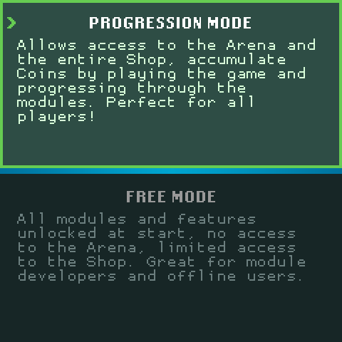
The first start runs a short setup. START or B skips it and goes to the mode choice.
- Input setup (skipped on Android and touch screens): press any button on the device you want to use, then each button the game asks for (UP, DOWN, LEFT, RIGHT, A, B, X, Y, L, R, START, SELECT). A button not pressed within 15 seconds keeps its default.
- Graphics test: the game measures what the system can draw and recommends a resolution or frame rate. A or START accepts it, B rejects it.
- Mode choice: Progress Mode (shown as Progression Mode) or Free Mode. UP/DOWN switch, A or START confirms.
| Mode | What it allows |
|---|---|
| Progress Mode | Needs an Omninet account. Modules and training modes are owned or bought with Coins earned in play; the Arena and the whole Shop are open. |
| Free Mode | Every installed module and every feature is open from the start. No Arena; the Shop offers modules only. |
The mode can be changed later in Settings > Gameplay > Change Mode. Each mode keeps its own save. Accounts, Progress Mode and the Arena are covered in Online Play.
After the mode choice the game opens the login (Progress Mode without an account), then the tutorial, then egg selection. The tutorial walks through Status, Inventory, Training and Battle with a Tutorial Digimon; START skips it, and Settings > Gameplay > Replay Tutorial plays it again.
Choosing an egg
Egg selection opens when the party is empty, or from an empty party slot in the Freezer. It has up to four steps.
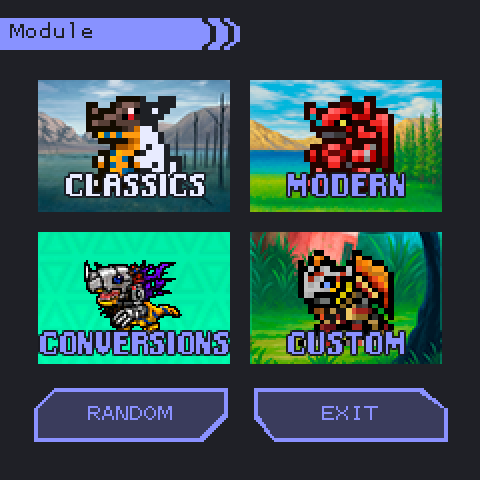
1. Category. CLASSICS, MODERN, CONVERSIONS or CUSTOM (the list of modules per category is in Modules). A category with no usable module is greyed out; in Progress Mode only owned modules count. RANDOM picks a category, module, device and egg for you and highlights the egg; you still confirm it.
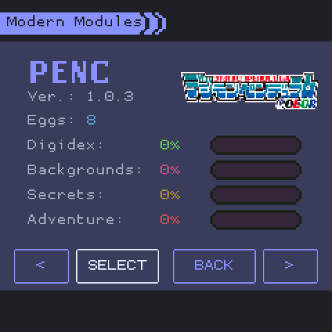
2. Module. Shows the module's logo, version, number of eggs and your progress in it: Digidex, Backgrounds, Secrets and Adventure, in percent. LEFT/RIGHT (or L/R, or the < > buttons) change module; SELECT (or START) chooses it.
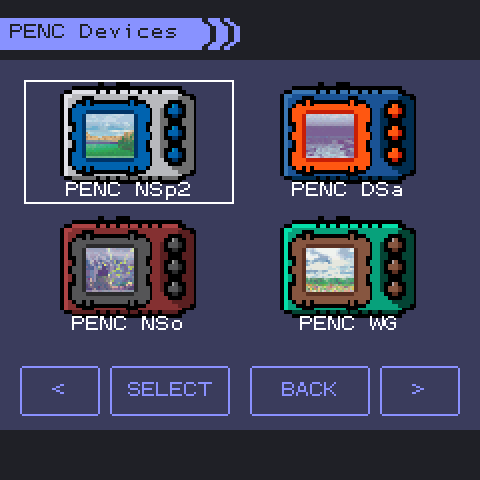
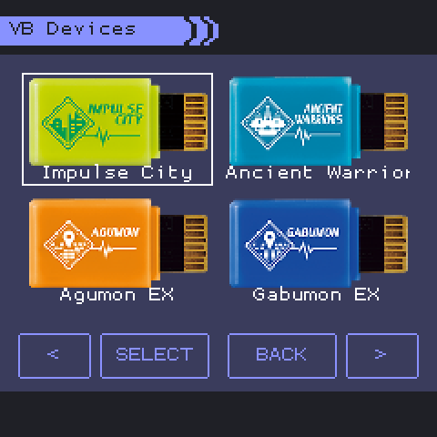
3. Device. Modules that model several physical devices show them here. A device with a single egg hatches it at once. The Vital Bracelet modules show their DIM and BEM cards instead of devices (second picture): VB and VH cards hold one egg each; the VBE Starter cards hold several, unlocked by clearing areas.
Devices whose eggs are all held back for a later release are hidden (the Digimon Mini Ver.3.0 and the Digivice Burst in 1.0).
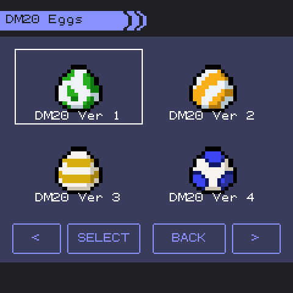
4. Egg. Four eggs per page. Move to an egg and press SELECT (or START). L/R turn pages.
Special eggs appear in the list once their unlock is earned and stay there. Examples: the Digital Monster X's Version SP (area 45), Digimon World's Punimon, Poyomon and Yuramon eggs (5, 10 and 15 Digidex entries), the Pendulum Color Godzilla's Ghidorah Digitama (area 10). Each module's documentation lists its own (Module Guide, Unlocks page).
Hatching and shaking
Every egg hatches at the first game minute after it is chosen; its hatch frames show from 5 seconds before. Shake the device (accelerometer) or press Y to shake the egg. On the Pendulum Color and the original Pendulum, an egg shaken 99 times or more before it hatches gives a Shaken Digimon (a flag on the Status screen; on the Pendulum Color it adds 10 Power).
Traited Eggs
Some devices give a Traited Egg. It has no separate entry: the next egg of the same module and version you hatch uses it, and the Digimon starts with the Traited flag (and, on most devices, a higher starting level).
| How it is earned | Modules |
|---|---|
| 30% chance when a Digimon reaches Perfect | DMC, DMGZ, DMH |
| Reaching Perfect with 100 or more battles | DMM |
| 48 hours after the last evolution | DM20, DMRV, PEN20, PENZ |
| 48 hours after the last evolution, with area 45 cleared | DMX |
| Win ratio at Adult (60%) | DMXW |
| Win ratio at Perfect | D-3 |
| Win ratio of a Digimon that failed to evolve or aged out | PENC, PENGZ (PENGZ: lifetime ratio) |
| Outliving the lifespan | PENOG |
| Generation: a Digimon that dies at Perfect or later leaves its Digitama | IC |
| None | DMOG, DW1, VB, VBE, VH |
Controls▼
The game uses twelve buttons. Each can be remapped in Settings > Input > Remap Input, for the keyboard, a gamepad and the GamePi's GPIO buttons. Mouse and touch work on every screen.
| Button | Keyboard | GPIO pin | Gamepad | General use |
|---|---|---|---|---|
| UP / DOWN / LEFT / RIGHT | Arrow keys | 5 / 6 / 16 / 13 | D-pad | Move |
| A | Enter | 21 | 0 | Select, confirm |
| B | Esc | 20 | 1 | Back, cancel, skip an animation |
| X | Left Ctrl | 15 | 3 | Main screen: show or hide the needs hearts |
| Y | Space | 12 | 2 | Shake (for devices without an accelerometer) |
| L | none | 23 | 9 | Main screen: turn the screen upside down (for prism screens) |
| R | Left Shift | 14 | 10 | Main screen: spread the Digimon evenly |
| START | Backspace | 26 | 6 | Main screen: Settings. Elsewhere: confirm or start |
| SELECT | Tab | 19 | 4 | Main screen: menu mode / Digimon mode. Elsewhere: switch view |
- Shake comes from an accelerometer (the GamePi's I2C sensor, or the phone on Android) or the Y button.
- Mouse and touch: tap or click a button to press it; drag or the mouse wheel scroll lists. In touch mode no focus highlight is drawn and extra on-screen buttons (BACK, arrows) appear where a screen needs them.
- Every press answers with a sound: "menu" when something happens, "cancel" when nothing does.
Main Screen▼
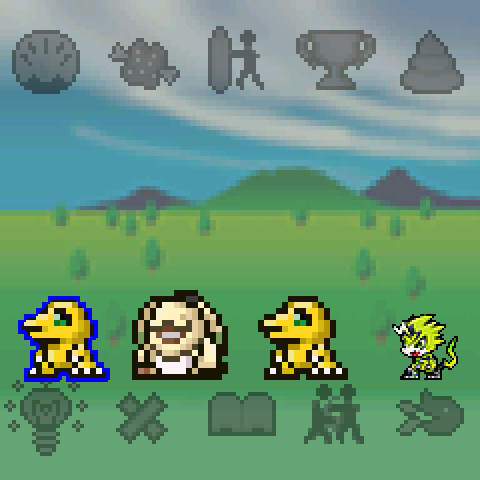
The party lives on the main screen, between two rows of menu icons. The icons have no labels; the selected one lights up in colour.
| Icon | Opens |
|---|---|
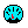 Status | Status |
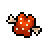 Food | Inventory |
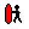 Training | Training, when a selected Digimon can train |
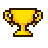 Battle | Battle, when a selected Digimon can battle |
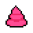 Clean | Flushes the poop (Poop and Cleaning) |
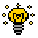 Light | Sleep |
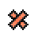 Heal | Treats sickness or injury (Sickness and Injury) |
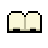 Library | Library: quests, Freezer, Digidex, Settings, Cards |
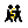 Connect | Connect: Arena, local battles, Shop |
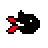 Call sign | Not selectable. Lights while a Digimon calls for care |
While a Digimon is dying or dead only the Library opens.
Menu mode and Digimon mode
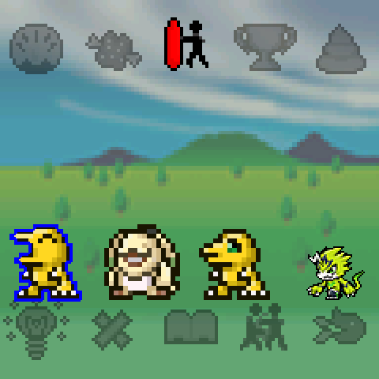
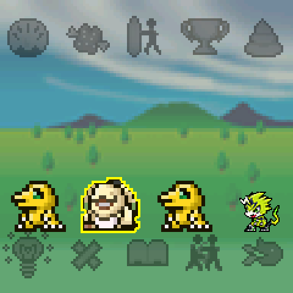
SELECT switches between the two modes.
- Menu mode (the default): the arrows move over the icons, A opens one. The first arrow press selects the Status icon.
- Digimon mode: LEFT/RIGHT move a yellow outline over the Digimon, A selects or deselects the one under it (blue outline).
Selected Digimon are the ones fed, trained, put to sleep or taken to battle. With none selected, the whole party is. After 60 seconds without input the cursor and the selection clear.
With a mouse, pointing at an icon selects it and a click opens it; clicking a Digimon selects it. On a touch screen a tap opens the icon at once.
Needs hearts, clock and other keys
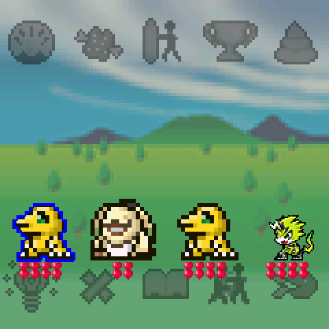
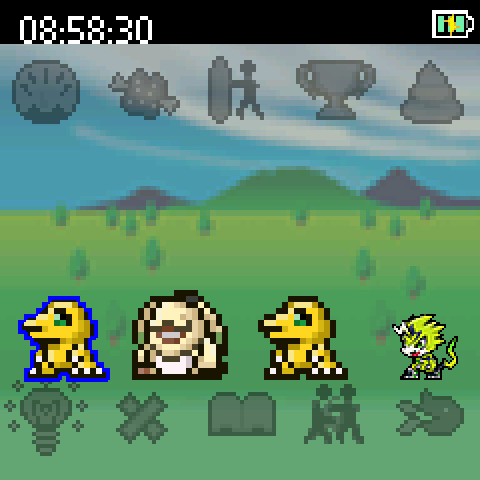
| Input | Effect |
|---|---|
| X, or a click on empty ground | Shows or hides the needs hearts under each Digimon: Hunger on top, Strength below. The Digivice iC and Digimon World have no Strength meter, so that row stays empty for their Digimon. |
| START, or a right click | Opens Settings |
| Y, or a shake | Shakes eggs; counts toward a shake death save |
| L | Turns the screen upside down (for screens seen through a prism) |
| R | Spreads the Digimon evenly across the screen |
Settings > Display > Show Clock adds a bar with the time and a battery icon (from the GamePi's UPS board, the phone, or the PC's battery).
Call sign, poop and ailments
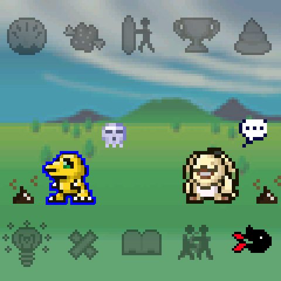
- The call sign (bottom right) lights, with an alarm, while a Digimon has an empty Hunger or Strength meter, or is tired at bedtime with the light on. See Care Mistakes and Death.
- Poop sits on the ground until it is flushed with the Clean icon.
- A skull over a Digimon means it is injured; a speech bubble with dots means it is sick. See Sickness and Injury.
Screensaver and events
After the time set in Settings > Display > Timeout (60 seconds by default) the main screen turns into a black screen with a large clock. Icons under the clock show poop, an ailing Digimon and an active call. Any input wakes the screen.
Each game hour there may be an event: a yellow triangle blinks at the top left with a sound for 60 seconds. A or a click accepts it. Events can bring an item, open a module's shop, or start a battle.
Status▼
The Status screen shows one Digimon at a time. Each module decides which values it shows, so the screen looks different from device to device; the examples below are four Child Digimon of four devices.
Layout
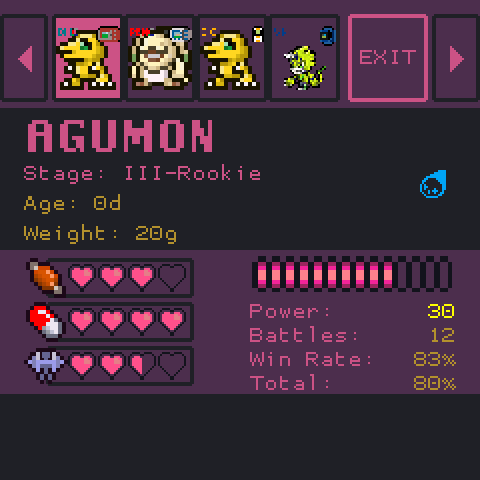
- Party row: the party, with each Digimon's module flag. LEFT/RIGHT or a tap shows another Digimon; EXIT (or B) leaves.
- Name, Stage, Age, Weight. Age is in days. Weight is the volume of data in the Digimon; food raises it, training lowers it.
- Flags (right): the Attribute icon, then Edited, Special, Shiny, Shaken, Traited and G-Cell Fragment when they apply.
- Meters (left): Hunger, Strength and Effort hearts on most devices.
- Battle values (right): DP, Power, Battles, Win Rate and Total win rate.
- Boxes (bottom): counts the device keeps, such as care mistakes or injuries. With more than three boxes the strip scrolls by itself.
UP/DOWN move between the values; A (or a tap) shows a value's tooltip. The values are a snapshot taken when the Digimon is shown.
Values
| Value | Meaning |
|---|---|
| Stage | The Evolution Stage. The screen uses the dub names: I-Fresh = Baby I, II-In-Training = Baby II, III-Rookie = Child, IV-Champion = Adult, V-Ultimate = Perfect, VI-Mega = Ultimate, VII-Super Ultimate = Super Ultimate. |
| Attribute | Vaccine, Data, Virus, or Free when the Digimon has none. In battle Vaccine beats Virus, Virus beats Data and Data beats Vaccine; Free has no advantage. |
| Hunger | Fed with Food. Drains over time while awake. On some devices (D-3, DMX, PENC, PENGZ, PENZ) the number of hearts follows the species' stomach, at 2 points per heart. |
| Strength | Fed with Vitamin and, on some devices, raised by training. On the Digimon Mini it is a 0-15 meter shown as 4 hearts. |
| Effort | Raised by training: 4 trainings fill a heart, 16 fill the meter. Reset on evolution. |
| DP | Spent to battle on devices that use it. Refilled by sleeping 8 hours or more, and on some devices by Vitamin. |
| Power | The species' power plus item bonuses. A higher Power gives a higher chance to hit. Bonuses from
full Strength, the stage tables, Traited, Shaken and stars are added in battle. Vital Bracelet stars show as
(1★). |
| Battles, Win Rate | Battles fought and won in this form, adventure and connection battles alike (Versus, DCom, WiFi, Discord). Reset on evolution. |
| Total | Win rate over the Digimon's whole life. |
| Level, Experience | Shown on the D-3, Digital Monster X and Pendulum Z. Experience comes from adventure wins. The level cap is 3 at Baby II, 4 at Child, 6 at Adult, 8 at Perfect and 10 from Ultimate. Reset on evolution. |
Device variations
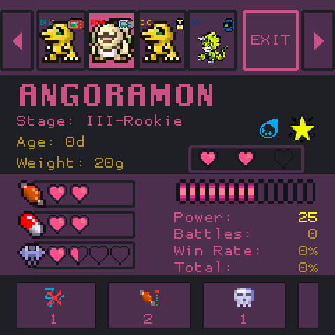
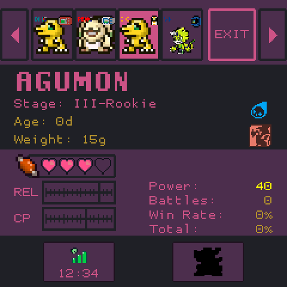
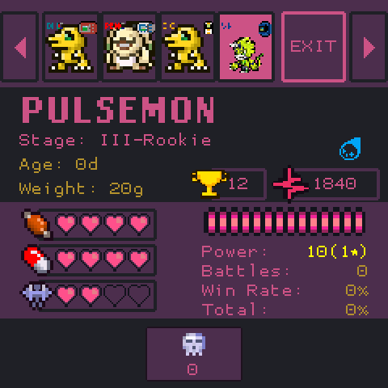
| Device | What its Status adds or leaves out |
|---|---|
| Digital Monster Color (DMC), DM20, DMOG, DMXW, PEN20, DMH, DMRV | Hunger, Strength and Effort hearts; DP; no boxes. DMH shows no Weight, DMRV no DP. |
| Pendulum Color (PENC) | Condition hearts in place of the level row: a care mistake takes a heart. Hunger and Strength hearts follow the stomach. Boxes: Sleep Disturbances, Overfeed, Injuries, Sicknesses. |
| Digivice iC (IC) | REL: Reliability, 0-31, a marker on a gauge where Strength would be. CP: Connect Points, 0-15, filled by battles against other devices or Digimon; a full meter gives an item. The icon under the flags is the Field the species belongs to (the DigiSoul family). Hunger's tooltip gives the stomach's fill behind the 4 hearts. No DP, Strength or Effort. Boxes: Evolution Timer and Next Evolution, the silhouette of the form the Digimon is heading for, or a ? while it meets none. |
| Vital Bracelet, BE, Vital Hero (VB, VBE, VH) | Trophies and Vital Values in the level row. Vital Values grow each hour while the Digimon is healthy and fed and fall while it is ailing or starving. Box: Injuries. |
| Pendulum Color Godzilla (PENGZ) | The G-Cell bar in place of Effort. Boxes: Mistakes, Injuries, Sicknesses. |
| Digital Monster X (DMX), Pendulum Z (PENZ) | Level and Experience bar. No DP. |
| D-3 | Level and Experience, DP, and eight boxes: Mistakes, Injuries, Sicknesses, Evolution Timer, Sleeps, Wakes, Poop Time and Feed Time. |
| Digimon Mini (DMM) | Hunger and the 0-15 Strength meter; Battles and win rates. No Age, Weight, Power or DP. |
| Digimon World (DW1) | Reliability (REL), Connect Points (CP, 0-10), Effort, Power coloured by its effort tier. Boxes: Mistakes, Virus, Evolution Timer. No DP. |
| PENOG | As the Digital Monster Color, with the boxes Mistakes and Evolution Timer. |
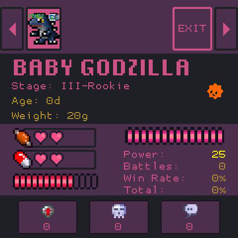
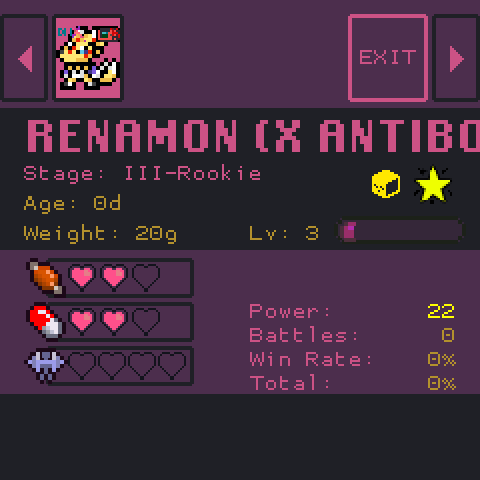
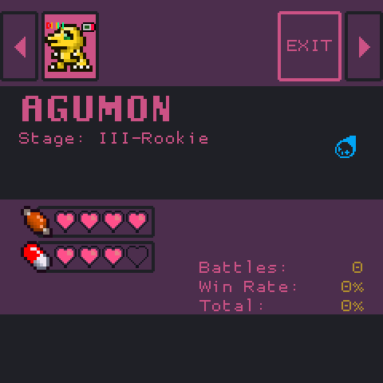
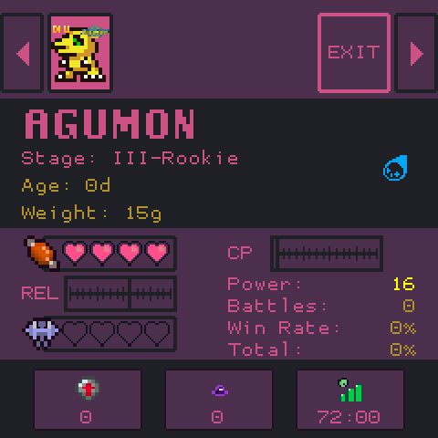
Boxes
| Box | Value |
|---|---|
| Mistakes | Care mistakes in this form |
| Sleep Disturbances | Times the Digimon was woken in this form |
| Overfeed | Times it refused food because it was full |
| Injuries / Sicknesses | Injuries (skull) and sicknesses (dots) in this form |
| Virus | Digimon World: poop left too long |
| Evolution Timer | Hours and minutes left in the form; 00:00 when the time is up |
| Next Evolution | Digivice iC: the form the Digimon would evolve into if it evolved now, as a silhouette |
| Sleeps / Wakes | The species' bedtime and wake time |
| Poop Time / Feed Time | Minutes between poops / between Hunger drains |
Inventory▼
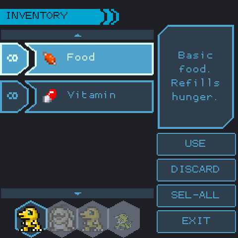
The Inventory feeds the party and uses items. The list holds Food and Vitamin (unlimited, marked ∞), then the module items you hold, then items bought in the Omninet Shop.
| Input | Action |
|---|---|
| UP / DOWN | Move in the list; the panel describes the item |
| A on an item, or USE | Use it |
| DISCARD | Throw one away (not Food or Vitamin). No confirmation. |
| SEL-ALL / SEL-NEED (or SELECT) | Who gets the item: the selection (or the whole party), or only those who need it |
| B or EXIT | Back to the main screen |
With a mouse or touch screen, the first tap selects an item and the second uses it. The strip at the bottom lights the Digimon that can take the selected item. After USE the game returns to the main screen, where they eat.
Food and Vitamin
| Item | Effect |
|---|---|
| Food | Hunger +1 heart, Weight +1 (from Baby II on; none on DMH). A full Digimon refuses it: that counts one Overfeed and starts the overfeed timer, during which every meal is refused and Hunger does not drain (60 minutes on DMM, DMOG, DMXW, DW1, PENC, PENGZ; 120 on most others; 180 on PENOG). |
| Vitamin | Strength +1 heart, Weight +1 to +3 by device (+2 on most; none on DMH, DW1 and IC). There is no refusal: past the full meter it is still eaten and still adds Weight. Every 4th Vitamin adds 1 DP on DM20, DMC, DMH, DMOG, PEN20, PENC, PENGZ, PENOG and VBE (8 DP on DMXW), and a protein overdose point that raises the injury chance of the next lost battle. The iC and Digimon World have no Strength meter; their Digimon refuse it. |
SEL-NEED gives Food to Digimon with Hunger below 4 and Vitamin to those with Strength below 4.
Module items
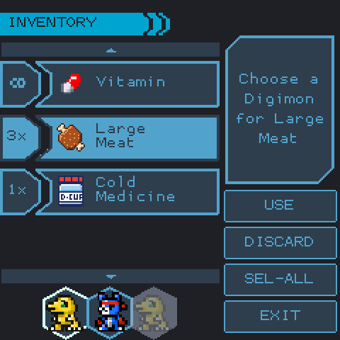
An item that belongs to a module goes to one Digimon of that module. When several could take it, the panel reads "Choose a Digimon for ..." and the strip at the bottom becomes a picker (LEFT/RIGHT and A, or a tap). B cancels and keeps the item.
An item nobody can take is kept, with the cancel sound. Typical reasons: a full stomach, the wrong Evolution Stage, a family weapon for a Digimon of another Field, or a Digimon asleep on the DM20, DMRV and DMX (which cannot be fed during their sleep).
| Kind of item | What it does | Examples |
|---|---|---|
| Meals | Hunger or Strength | iC Meat, Cake; Digimon World meats |
| Stat items | HP, attack, Power, DP, Vital Values, Reliability, time | Vital Bracelet HP+, Reliability Max |
| Battle items | Not used here: offered before an adventure battle ("Use it before a battle") | iC weapons, DMX chips, Digimon World disks |
| DigiSoul | Feeds DigiSoul to an iC Digimon | DigiSoul (Dragon) |
| Medicine | Cures sickness or injury outright | iC Cold Medicine, Injury Medicine |
| Digi Bedding | The Digimon sleeps 10 minutes; cures sickness and injury and removes a care mistake | iC |
| Accessories | Worn on the head, the face or as an aura; one at a time | iC Afro, Sunglasses, Aura |
| Level Reverse | Back to the previous form | iC |
| Evolution items | Used from Battle > Armor (see Battle) | DigiMentals, Ouryujin, Black Wing |
| Tickets | Start a special battle | iC D-1 Ticket |
| Multipliers | Multiply trophies or Vital Values for a time | Vital Bracelet BE items |
The inventory holds up to 99 of each module item. iC meals and medicines, the Call Switch and accessories are never used up.
Training▼
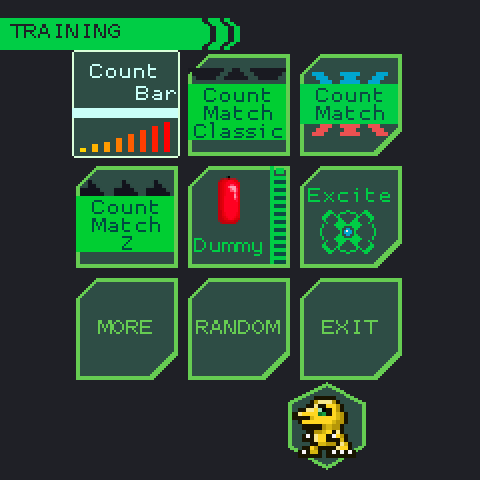
Training plays a short minigame with the selected Digimon. The result raises Effort and Strength and lowers Weight, as each module sets. Training costs no DP, except on the Digivice iC, where each play costs a Hunger heart.
The menu shows six minigames per page. The modes of the selected Digimon's modules come first. MORE shows the next page, RANDOM starts a random mode, EXIT leaves. In Free Mode every mode is available; in Progress Mode Dummy is free and the others are bought in the Omninet Shop (Gameplay).
A Digimon cannot train while sick or injured. A sleeping one is woken, which counts as a sleep disturbance (the DM20, DMRV and DMX Digimon cannot train asleep at all).
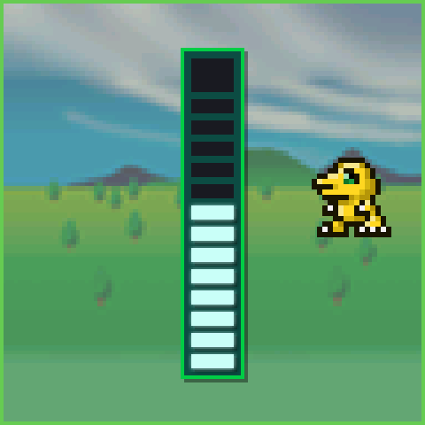
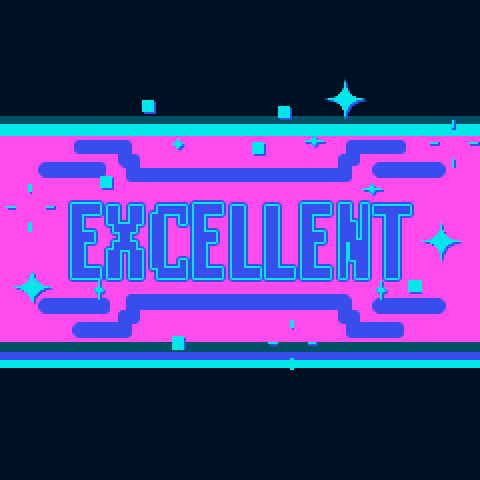
Every play shows READY, the minigame, the attack, then the result: Bad, Good, Great or Excellent (some modes show MEGA HIT for the top grade). Good or better is a win. A win also removes 2 disturbance penalty points and counts for training quests.
B quits during most minigames; nothing is applied. When the result is shown the game returns to the main screen.
Trophies are given only to the Vital Bracelet Digimon (VB, VBE, VH), the devices that show them.
Minigames
| Mode | How to play | Grades |
|---|---|---|
| Dummy | Press A (or tap) to fill a 14-segment bar in 2.5 s | Excellent at 14, Great 13, Good 11-12 |
| Count Match (Color) | Shake for 3 s. The colour lands on Blue at 2 shakes, Yellow at 7, Red at 12. Each Attribute has a best colour: Vaccine and Free Red, Data Yellow, Virus Blue | By super hits: 5 Excellent (Mega Hit), 3-4 Great, 2 Good |
| Count Match Classic | Shake for 5 s, counted 0-40 | 40 Excellent, 35-39 Great, 29-34 Good |
| Count Match Z | Shake for 3 s to fill the arrows the Attribute asks for | Exact count Excellent, one away Great, further Good |
| Count Bar | Mash A for 5 s | 18 or more Excellent, 12 Great, 6 Good |
| RPM | Press A at a steady rhythm for 6 s, close to the species' target | As Count Bar |
| Excite | A stops a sweeping arrow. The speed follows the day's XAI roll (1-7) | Red Excellent, Yellow Great, Blue Good |
| Head to Head | Needs 2 Digimon. 5 strikes: UP or DOWN; a strike wins when it takes the other lane | 5 wins Excellent, 4 Great, 3 Good |
| Punch | Shake up to 20 times in 18 s | 20 Excellent, 15-19 Great, 10-14 Good |
| Mogera | Counter 5 Anti-G shots with UP or DOWN, then fill a Dummy bar with A | Strength 7 or more Excellent |
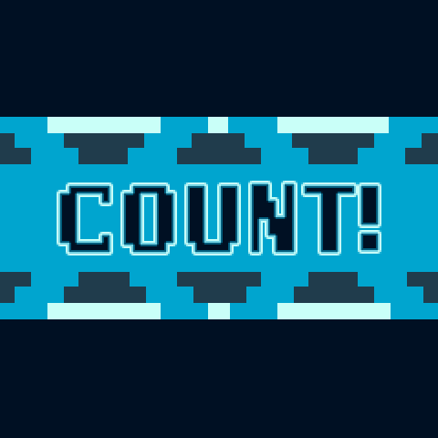
Count Match shows READY! with a colour, then COUNT!: shake, and stop on your Attribute's colour. The Pendulum Color Godzilla variant lands at 3, 7 and 11 shakes and brings Anguirus every 5th play.
Shake modes take Y or an accelerometer. Count Match Color and Z also count a mouse or finger shaken over the screen; Count Match Classic does not.
Effects by module
Effort, Strength and Weight change per result (Bad / Good / Great / Excellent). Every module gives 1 Effort per play, except the Digivice iC, which gives none.
| Modules | Battle minigame | Strength | Weight lost |
|---|---|---|---|
| DMC, DMGZ | none | 0 / 1 / 1 / 1 | 1 / 1 / 1 / 1 |
| DMH | none | 0 / 0 / 0 / 1 | 0 |
| DMOG | none | 0 / 1 / 2 / 3 | 1 / 2 / 2 / 2 |
| DM20, DMRV | Dummy | 0 / 1 / 1 / 2 | 1 / 2 / 3 / 4 |
| DMM | Count Bar | 0 / 2 / 3 / 4 (of 15) | 1 / 2 / 2 / 3 |
| DMX | Excite (XAI roll and bar) | 0 / 1 / 2 / 4 | 1 / 2 / 6 / 8 |
| DMXW | Excite (XAI bar) | 0 / 1 / 2 / 4 | 1 / 2 / 4 / 8 |
| D-3, PENC | Count Match | 0 / 1 / 2 / 4 | 2 / 4 / 10 / 20 |
| PENGZ | Count Match | 0 / 0 / 1 / 2 | 2 / 2 / 5 / 10 |
| PEN20 | Count Match Classic | 0 / 1 / 1 / full | 1 / 1 / 1 / 8 |
| PENOG | Count Match Classic | 0 / 1 / 2 / 4 | 1 / 2 / 4 / 8 |
| PENZ | Count Match Z | 0 / 1 / 2 / 4 | 2 / 4 / 10 / 16 |
| VB, VBE, VH | none | 1 / 1 / 2 / 3 | 1 / 4 / 4 / 4 |
| DW1 | Dummy | none | 1 / 2 / 2 / 2; Reliability +1 on a win |
| IC | RPM | none | 1; Reliability +1 and Fight Money 0 / 10 / 20 / 50 on a win |
The Digital Monster Color Godzilla 70th counts G-Cells in its Mogera training: +4 for a full success, +2 for a failure in the second phase, -2 for a failure in the first.
iC Bonus minigames
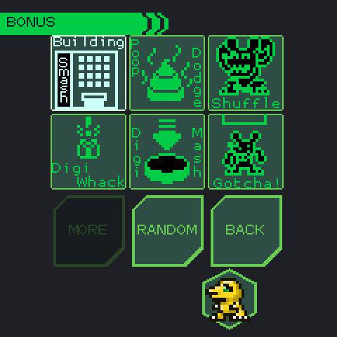
The BONUS button (top right of the Training menu, shown when an iC Digimon is selected) and Battle > Specials > IC > Minigames open the iC's money minigames. Only iC Digimon play. Each costs a Hunger heart; a success gives Reliability +1 and pays Fight Money ("nP GET!"). They give no Effort, Strength or Weight change.
| Game | Device | How to play | Fight Money |
|---|---|---|---|
| Building Smash | 10X | A stops a moving cursor over the building; 3 hits clear a stage, a miss ends the game | 10 / 20 / 50 for 1-3 stages |
| Poop Dodge | 10X | UP/DOWN across 4 lanes, 3 stages; a poop hit ends the game | 10 / 20 / 50 |
| Shuffle | 10X | LEFT/RIGHT and A to find Chuumon; ends on the first miss or at 10 finds | 5, doubling with each find |
| Digi Whack | 20X | Move between 3 holes and whack with A; 3, 5 and 7 hits per stage | 10 / 30 / 50 |
| Digi Mash | 20X | Mash A for 4.4 s; 31 presses or more to succeed | up to 50 |
| Gotcha! | 20X | A drops the trap on Chuumon; 3, 5 and 7 catches per stage | 10 / 30 / 50 |
Battle▼
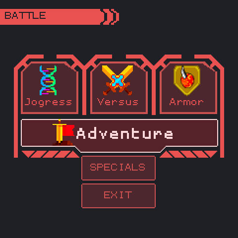
The Battle menu holds Jogress, Versus, Armor and Adventure, and SPECIALS when a module in the party offers shops, passwords or minigames. B or EXIT returns to the main screen.
A Digimon can battle when it is past Baby I, alive, has Power, can pay the battle cost (DP, or a Hunger heart on devices such as the iC and Digimon World) and is not blocked by its ailment or by sleep. Sick Digimon may battle on DMM, PENC, PENGZ and PENOG; injured ones only on PENGZ.
Adventure
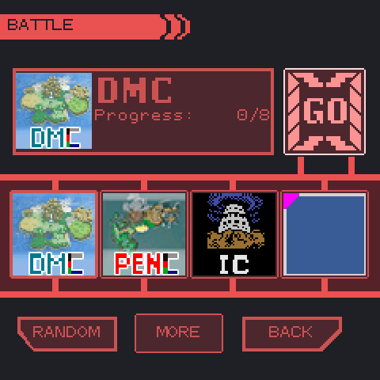
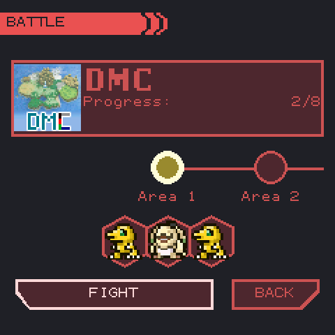
Adventure fights each module's enemies area by area. It is the main source of experience, items and unlocks.
- Module: LEFT/RIGHT choose among the modules with an adventure (the party's modules first); the panel shows the cleared areas. MORE shows the next four, RANDOM picks one. GO opens the areas.
- Area: the timeline shows cleared areas in green, the current one in yellow and locked ones in red. UP and LEFT/RIGHT choose an area already reached; FIGHT starts it at round 1. An area with an entry fee shows it in yellow (for example 100P on the iC); without the money the battle is refused ("No Money").
The DM20, DMRV, DMOG and PEN20 use NEXT and RESET instead of an area timeline: NEXT fights the next battle, RESET starts again from area 1.
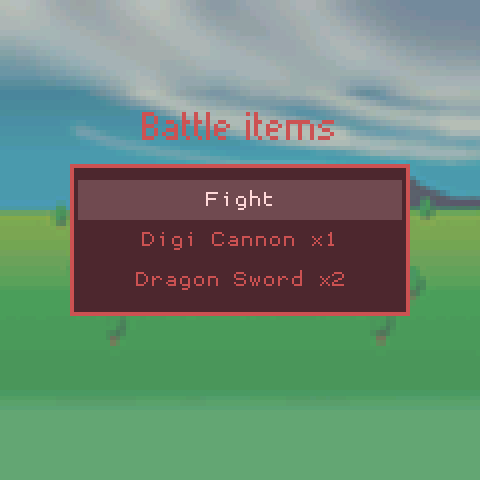
Battle items. When you hold battle items of that module that fit the Digimon, a list opens before the battle: choose an item to use it, or Fight. iC weapons need a Digimon of the right Field. On most modules the items last until the area's boss; on the iC the list opens before every round and an item lasts that round.
Examples: Digital Monster X HP Rom (+2 HP), AP Chip (+2 attack), Jumper Gate (straight to the boss), EXP Coat (double experience); iC weapons (+1 or +2 attack); Digimon World disks; Vital Bracelet HP, ATK and POWER Temp items.
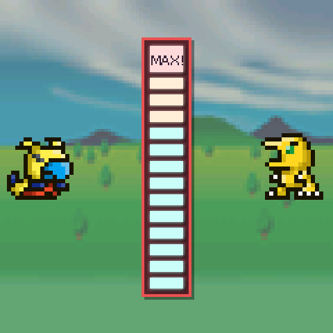
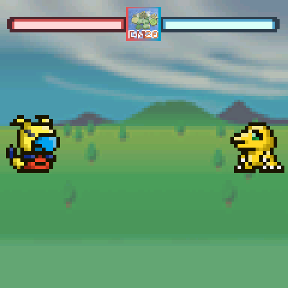
A round shows the area and the enemy, the enemies arriving, READY, then the module's charge minigame (the same games as Training; the table in Training gives each module's). Only the first Digimon plays it; the team shares the result. Modules with no minigame use a fixed charge.
The battle itself lasts at most 12 turns. The bar at the top shows the enemies' HP (left, red) and the team's (right, blue). Each Digimon faces its own enemy. A boss, at the end of an area, is a single enemy with HP multiplied by the team size that attacks every Digimon each turn. The side that knocks out the other wins; after 12 turns the side with more HP wins.
- Hit chance: Power / (Power + enemy Power), plus the Attribute advantage (Vaccine > Virus > Data > Vaccine), minus the enemy's handicap.
- HP: the module's fixed HP, or the species' HP plus 2 at levels 2, 5, 6, 8 and 10. Vital Bracelet Digimon get up to 6 more from Vital Values.
B skips the entry animations and the battle animation.
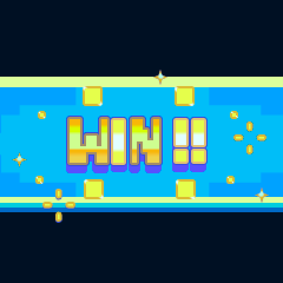
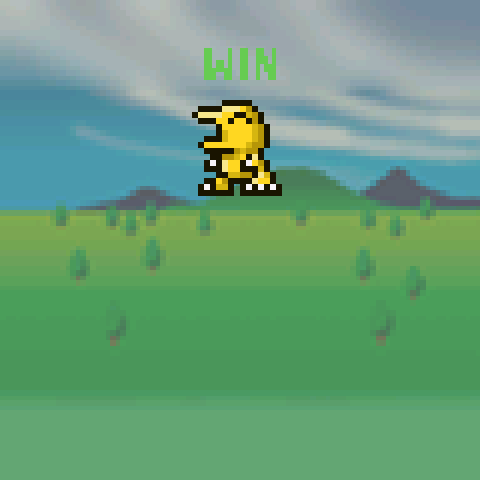
Result. After the animation a panel shows WIN, LOSE or DRAW, and per Digimon its level and experience gained (where the module shows levels) or G-Cells (Godzilla modules). The bottom line shows the prize item and the currency earned, such as Fight Money on the iC or Bits in Digimon World.
- Every round, won or lost, counts a battle, pays the battle cost and, on some modules, takes off Weight.
- A win counts a win, adds Reliability (iC, Digimon World), advances the round or area, and the area's last win grants its unlocks. A loss sends the module back to round 1 of the area.
- Experience goes to every Digimon of the team, +10% when all of them survive; a loss gives none. At most one level a battle. Levels need 50, 150, 500, 800, 1000, 1500, 2000, 3000 and 5000 experience (levels 2 to 10).
- Every battle can injure: after a loss at the Digimon's injury chance plus the module's, the protein overdose and the disturbance penalty; after a win at the module's win chance. Battles never make a Digimon sick.
- Connect Points: on the Vital Bracelets each won adventure or connection battle has a 44% chance to drop an item ("Found ...!"). The iC and Digimon World fill their meter only in battles against other devices.
On the Digital Monster X and Pendulum Z, a Food / Next menu after round 3 of 5 (or round 4 of 6 or more) lets you feed the team. When a Digimon can no longer pay the battle cost, Retire / Continue is asked.
Versus
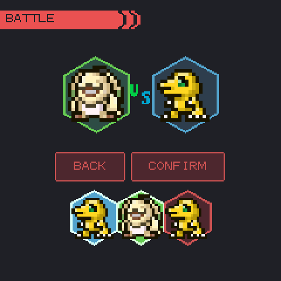
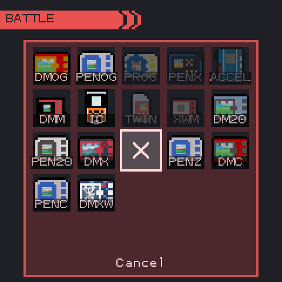
Versus makes two of your own Digimon battle each other by a real device's rules. Choose exactly two Digimon in the strip (the first goes on the right, the second on the left), press CONFIRM, then pick the device line in the grid. The battle has no charge minigame and counts as a connection battle for both.
| Line | HP | Turns |
|---|---|---|
| DMOG (Original) | 5 | 4 |
| PENOG (Pendulum) | 3 | 5 |
| DMM (Digimon Mini) | 6 | up to 10 |
| IC (Digivice iC) | 16 | 5 |
| DM20 (20th Anniversary), PEN20 (Pendulum 20th) | 10 | until one falls |
| DMX (Digimon X), PENZ (Pendulum Z) | the Digimon's own | 5 |
| DMC (Color) | 5 | 4 |
| PENC (Pendulum Color), DMXW (Color Xros Wars) | 3 | 6 |
Greyed lines in the grid are not available yet. The same grid is used for DCom battles (Connect).
Jogress
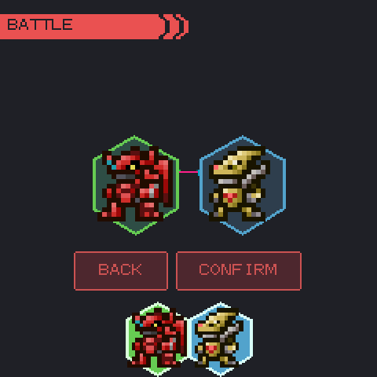
Jogress joins two Digimon. Choose two Digimon in the strip; when the pair is compatible, the top shows "?" ("??" when both evolve) and CONFIRM starts the Jogress. Digimon that can never jogress are greyed out.
- Single: the partner is absorbed and the first Digimon evolves.
- Dual: both stay and each evolves (the Pendulum Color's attribute Jogress, for example).
Partners are matched by name, by name prefix (the Ancient Digimon), or by Attribute and Evolution Stage, as each module's routes say; a route's own level and area requirements also apply. Two Digimon of modules on the same connection line can jogress, each by its own module's route: DMC with DMGZ and DMH, PENC with PENGZ, DM20 with DMRV, DMX with Digimon World.
Cost: a full DP meter on both (DMC, DMGZ, DMH, DMXW, PEN20, PENOG and the Vital Bracelets), a full Strength meter (D-3, PENZ), or nothing (the others). "Both pets need full DP!" means one of them is short.
With a DCom adapter, a Pendulum Color or Pendulum Z Digimon can also jogress with a real device: slot 2 then shows "Serial" and the game waits 60 seconds for the device.
Armor and item evolution
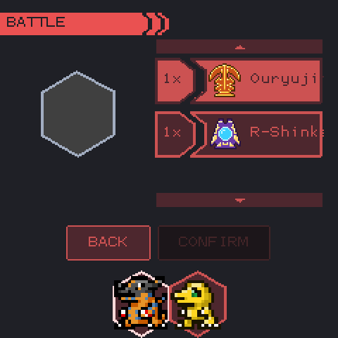
Armor lists the evolution items you hold: the D-3's DigiMentals, the iC's evolution items (Ouryujin, Platinum, Leo Cap, Chaos-G, Marine Extract, Professor Hat, Giga Lance, Mame Chip) and R-Shinka (a random next stage), Digimon World's Black Wing and others. Choose an item with UP/DOWN and a Digimon in the strip; CONFIRM is enabled when the item evolves that Digimon. The item is used up only when the Digimon evolves; routes that need several uses count each one.
Specials
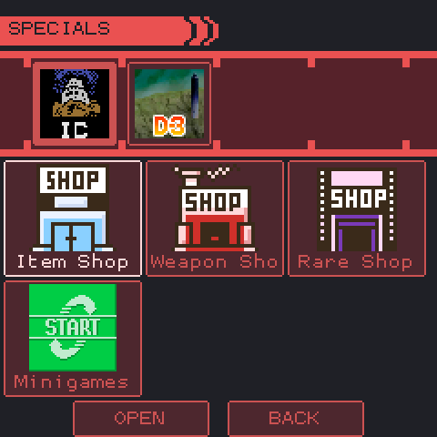
SPECIALS lists what each module of the party offers. Choose the module at the top, then a tile, and OPEN.
| Module | Tiles |
|---|---|
| Digivice iC | Item Shop, Weapon Shop, Rare Shop, the DigiShops opened by connection wins, Minigames |
| Digimon World | Item Shop, Recycled Goods, Card Shop, Secret Item Shop, Merit Shop, Restaurant (each once unlocked) |
| D-3 | Password |
| Pendulum Ver.20th | Copymon (codes) |
A shop lists items with their price and your balance; BUY (or A on a row) buys one. Items can be bought again. Messages: "Not enough!" (money), "You have 99!" (the limit). Card packs open at once.
The Vital Bracelet modules have no shop: their items drop through Connect Points.
Password and Copymon: enter a code with LEFT/RIGHT (box) and UP/DOWN or A (character), or type it; START confirms. A valid code adds its Digimon to the party, or to the Freezer when the party is full. Each code works once.
DigiXros and Mode Change
Some Digimon can take a temporary form for a battle. Before the round, a selector shows each eligible Digimon with its options: LEFT/RIGHT change the form, CONFIRM fights. Leaving every box on the normal form fights as usual.
| Module | Forms | Requirement |
|---|---|---|
| Digital Monster Color Xros Wars | 32 DigiXros (Shoutmon X2, X3, ...) and 6 Mode Changes | The Friends the DigiXros names, and its DP cost (1-7 DP, spent); Mode Changes need Strength 14 or more |
| Pendulum Color | Erlangmon Blast Mode, Nezhamon Crimson Mode, Takutoumon Wrath Mode, Ravemon Burst Mode | Strength 8 or more |
| Pendulum Color Godzilla | Super Mechagodzilla | Strength 8 or more |
The form fights; the Digimon in the party is unchanged and returns to its form on the result screen. Each form reached is registered in the Digidex. The selector also appears before DCom battles; never in Versus.
Poop and Cleaning▼
Each species poops every few minutes while awake (its Poop Time; 60 minutes by default). Each poop takes 1 Weight off, never below the species' Minimum Weight. Poop comes twice as fast for an Ultimate after 48 hours in its form, after a failed evolution on some devices (see Evolution), and on the Xros Wars Color from 5 days of age.
Some devices drop a Jumbo poop (20% on D-3, PENC, PENGZ, DMX and PENZ), drawn larger but counted as one. The DMX and PENZ also drop doubles and triples.
The Clean icon flushes every poop. On most devices the flush wakes sleeping Digimon, which counts as a sleep disturbance; it does not on DM20, DMC, DMM, DMOG, DMRV and Digimon World.
When poop makes Digimon sick
When the poop on screen reaches the count below times the party size minus one (at least once the count), every Digimon from Baby II up gets the device's ailment.
| Poops | Ailment | Modules |
|---|---|---|
| 4 | Injury (skull) | DM20, DMRV |
| 4 | Sickness (dots) | PEN20 |
| 6 | Sickness | DMM, IC |
| 8 | Injury | DMC, DMGZ, DMH, DMOG, DMXW, DW1, VB, VBE, VH |
| 8 | Sickness | D-3, DMX, PENC, PENGZ, PENOG, PENZ |
In Digimon World each poop left 42 minutes also costs a care mistake and adds a Virus point.
Sleep▼
The light icon opens SLEEP. Sleep turns the light off for the selected Digimon (or every Digimon that can sleep); Wake turns it on. Tap the strip at the bottom to pick Digimon; with none picked, every eligible one is affected.
- At its bedtime (the Sleeps value) an awake Digimon gets tired and calls. It does not fall asleep by itself: use Sleep. Ignoring the call costs one care mistake per night, after 60 minutes on most devices (30 on DMX, PEN20, PENOG, PENZ; 10 on DM20, DMM, DMRV; 3 on the iC).
- A Digimon can be put to sleep at any hour without penalty. It wakes by itself at its wake time.
- Waking after 8 hours or more of sleep refills DP.
- Baby I Digimon (except on the Vital Bracelets) and a few others have no sleep times and cannot sleep.
- On DM20, DMRV and DMX a sleeping Digimon cannot be woken, fed or trained during its sleep time.
While asleep
Hunger and Strength do not drain, no poop comes, no call sounds and the ailment timers stop. The time in form keeps running, so a sleeping Digimon can evolve, except on DM20, DMOG and VB, whose evolution timer stops during sleep.
Sleep disturbances
Feeding, training, battling or (on most devices) cleaning wakes a sleeping Digimon and counts a sleep disturbance. It falls back asleep after 10 minutes (15 on DMXW, PENC, PENGZ) if it is still its sleep time. Disturbances are an evolution requirement on some devices (DMC, DMOG). Each one also adds disturbance penalty points that raise the injury chance of a lost battle on DMXW, PENOG, PENC and PENGZ; a won training removes 2. On DMM, IC and PENOG every 10th disturbance in a form makes the Digimon sick.
Settings > Gameplay > Wake and Sleep set one schedule for every Digimon; it is used only when both are set.
Sickness and Injury▼
A Digimon can be sick (dots) or injured (skull), one ailment at a time. The Heal icon gives one dose to every ailing Digimon. When the party has both kinds, HEALING opens and you choose: Dots treats the sick, Skull the injured. Most forms need one dose; some Adult and Perfect forms need 2 or 3. Forms whose doses are 0 (most Baby I) never fall ill.
Evolution clears both ailments and their counts.
| Cause | Result |
|---|---|
| Battles | Injury only, on every device. Arena battles never injure. |
| Poop piling up | The device's ailment (table in Poop and Cleaning) |
| Reaching 99G | Sickness on D-3, DMM, DMX, IC, PEN20, PENC, PENGZ, PENOG, PENZ; injury on VB, VBE, VH; nothing elsewhere |
| Every 10th sleep disturbance | Sickness on DMM, IC, PENOG |
Limits
Too many sicknesses or injuries in one form, or one left untreated for 6 hours of awake time (5 on DMOG, 12 in Digimon World), brings the Digimon near death (see Care Mistakes and Death).
| Sicknesses / Injuries per form | Modules |
|---|---|
| 20 / 20 | DMX, PEN20, PENOG, PENZ |
| 12 / 12 | D-3, PENC, PENGZ |
| 30 / 30 | IC, DMM |
| injuries only: 20 | DM20, DMRV |
| injuries only: 15 | DMC, DMGZ, DMH, DMOG, DW1, VB, VBE, VH |
| injuries only: 12 | DMXW |
A sick or injured Digimon cannot train. iC Cold Medicine and Injury Medicine cure their own kind at once; Digi Bedding cures both. D-3, the Pendulum Color and the Pendulum Color Godzilla show Sicknesses and Injuries boxes on the Status screen.
Evolution▼
Each form has an evolution time and a list of routes. The routes and their requirements are in each module's documentation (Module Guide, Charts page).
- The timer counts minutes in the form. It runs during sleep too, except on DM20, DMOG and VB.
- When the time is up, the Digimon evolves as soon as it needs no care: no empty meter, no ailment, not tired at bedtime. A sleeping Digimon can evolve.
- The first route met wins. Routes are checked in the module's order; the first whose requirements are all met is taken. A route with a chance (the Pendulum Color Godzilla's win-ratio roll) rolls last.
Requirements a route can ask for include care mistakes, trainings or Effort, battles and the win ratio, Weight, overfeeds, sleep disturbances, an area cleared, an item used, a time of day, and device values such as DigiSoul (iC), Vital Values and trophies (Vital Bracelets), G-Cells (Godzilla modules) or condition hearts (Pendulum Color). Routes that count defeated enemies or virus evolve the Digimon the moment they are met.
Failed evolutions
On devices whose routes read the win ratio (D-3, DM20, DMC, DMGZ, DMH, DMM, DMOG, DMRV, PEN20, PENC, PENGZ and the Vital Bracelets) a Digimon gets one try when its time comes. If it meets no route, or loses the chance roll, the evolution fails and the timer never evolves it again. The Digital Monster X (from Perfect) and the Pendulum Z (from Adult) work the same way. Items, Jogress, Armor and Level Reverse can still evolve it. Nothing on screen announces a failure.
On the Pendulum Color, Pendulum Color Godzilla, Pendulum Ver.20th, Digital Monster X and Pendulum Z a failed Digimon's Hunger and Strength drain twice as fast and it poops twice as often, as an Ultimate does after 48 hours in its form.
Seeing the next evolution
- Digivice iC: the Status screen's Next Evolution box shows the silhouette of the form the Digimon would take now, or a ? while it meets no route.
- Every module: the Digidex tree shows the line's forms (names only for forms already met), and the module's documentation shows each route's requirements.
Generations (Digivice iC)
An iC Digimon that dies at Perfect or later leaves its Digitama; hatching it starts the next generation. Per generation, up to 8, each evolution from Child up comes an hour earlier and the Digimon starts with 1 more Reliability.
Care Mistakes and Death▼
Calls and care mistakes
The call sign lights when a Digimon's Hunger or Strength is empty, or when it is tired at bedtime with the light on. A call left unanswered for the device's time costs one care mistake; the call then goes out until the meter is refilled or the next night. On the Pendulum Color a care mistake takes a condition heart instead. Mistakes are counted per form and reset on evolution.
| Minutes before a mistake: Hunger / Strength / bedtime | Modules |
|---|---|
| 10 / 10 / 60 | D-3, DMC, DMGZ, DMH, DMXW, PENC, PENGZ, VB, VBE, VH |
| 10 / 10 / 30 | DMX, PEN20, PENOG, PENZ |
| 10 / 10 / 10 | DM20, DMM, DMRV |
| 20 / 20 / 60 | DMOG |
| 3 / - / 3 | IC |
| 90 / - / 60 | DW1 |
Causes of death
| Cause | Modules |
|---|---|
| Too many sicknesses or injuries in one form, or one untreated too long | Every module (limits in Sickness and Injury) |
| Hunger or Strength empty for 12 hours awake | DMC, DMGZ, DMH, DM20, DMRV (6 hours on DMOG) |
| Hunger found empty 20 times without a full refill | D-3, PENC, PENGZ (18 on DMXW, which also counts Strength) |
| 20 care mistakes in one form | D-3, DM20, DMGZ, DMH, DMM, DMRV, DMX, PEN20, PENOG, PENZ, VB, VBE, VH |
| 5 care mistakes at Adult or Perfect, once past the evolution time | D-3, DM20, DMC, DMGZ, DMH, DMRV, DMX, PEN20, PENGZ, PENOG, PENZ, VB, VBE, VH |
| 5 care mistakes at Ultimate or later, after 48 hours in the form | As above, plus DMOG and DW1 |
| From 5 days of age: 16 care mistakes in one form (and Hunger and poop twice as fast) | DMXW |
| Still unable to evolve 2 hours after the evolution time (an Ultimate: at 144 hours); again an hour after a save | IC |
| Old age: 15 days of the Digimon's own life (time in the Freezer or with the desktop game closed does not count) | DW1 |
Digimon on the other devices do not die of old age.
Death save
On devices with a death save a Digimon that meets a cause of death goes near death first: it shows the skull and the death sound plays. Press B (or tap the Digimon area), or shake (or press Y), the number of times the device asks, within the time limit. If the count is reached and the chance roll succeeds, the Digimon survives: the cause is undone by one step and it is safe for 60 minutes. Otherwise it dies.
| Save | Modules |
|---|---|
| 60 presses of B in 30 s, then a 1 in 20 chance | IC |
| 100 presses of B in 60 s | DMM, DMX |
| 50 shakes in 30 s | PENC, PENGZ |
| 100 shakes in 60 s | D-3, PEN20, PENOG, PENZ |
| No save: the Digimon dies at once | DM20, DMC, DMGZ, DMH, DMOG, DMRV, DMXW, DW1, VB, VBE, VH |
A dead Digimon is removed 5 minutes later. When the party is empty, egg selection opens.
Library▼
The Library shows the day's three quests and opens the Freezer, the Digidex, Settings and Cards (the four buttons at the bottom). It is the only menu that opens while a Digimon is dying.
Quests come from the modules of the Digimon in the party. A module's daily gift takes a slot first (Digimon World's Meat Farm: 3 Giant Meat, to claim at once). Each panel shows the quest, its progress, the module and the reward. The border turns from red (no progress) to yellow (some) to green (complete).
| Input | Action |
|---|---|
| Tap CLAIM | Claim one completed quest |
| START | Claim every completed quest |
| A | Press the focused button |
| B or EXIT | Back to the main screen |
Rewards: an item, experience for every Digimon in the party, trophies (for the devices that show them) or Vital Values. Quests reset at the first visit to the main screen after midnight; unclaimed rewards are lost.
Modules with quests: the Vital Bracelets (win and train quests), D-3 (experience, armor evolution and boss quests) and Digimon World (Meat Farm). With no such module in the party the panels read "No quest".
 Freezer▼
Freezer▼
The Freezer stores Digimon outside the party: 10 boxes of 25. A stored Digimon does not need care.
- Party view: the party; an empty slot (+) opens egg selection.
- Box view: one box at a time ("Box 1/10"). L/R, or LEFT/RIGHT at a grid edge, change box.
SELECT, or the Party and Box buttons, switch views. A on a Digimon opens its menu:
| Where | Options |
|---|---|
| Party | Store (into the current box), Stats |
| Party, dead Digimon | Clear (deletes it, without confirmation), Stats |
| Box | Add (to the party, if it has room: "Party is full"), Stats |
| Box, Arena team | Arena with the time left, Stats. The Digimon stays locked until the season ends. |
The party size is set in Settings > Gameplay > Max Pets (1-10). Changes are saved at once.
The Stats panel shows the Digimon's main values; any button closes it.
 Digidex▼
Digidex▼
The Digidex lists every Digimon of every installed module and marks the ones you have met.
- Modules: All, then each module with "known/total". Digimon World and the Xros Wars Color also offer their Friends list (recruits, Friends won in battle).
- List: sprite, name, Attribute and Evolution Stage (dub names, as on Status). Unknown Digimon show "????". FILTER narrows the list by module, stage, known or Friend (by touch or mouse).
- Tree: A on a known Digimon shows its line's evolution tree, from the egg, with boxes coloured by Attribute. The arrows or a drag move around it.
A Digimon becomes known when it hatches or evolves in your party, when a code gives it, when it joins as a Friend, or when a temporary form (DigiXros, Mode Change) is reached in battle. In Progress Mode each first discovery pays Coins. Some unlocks ask for a number of known Digimon (for example Digimon World's eggs at 5, 10 and 15).
B goes back one level; from the module list, to the main screen.
The tree of the Digital Monster Color Ver.1, centred on Agumon. Only forms already met show their name.
Cards▼
CARDS (Library > Collections) holds each module's card collection: the Digivice iC's 50 plates (Soul Plates and iD Plates) and Digimon World's 66 cards. The header shows the module, the cards owned and the copies.
- A card you do not own shows its number and back, never its name. Badges show the copies (x2), a physical card (P) and shiny copies (S). Shiny cards have a holographic finish.
- VIEW (A) shows a card; USE reads it for a Digimon of its module (asking which, when there are several). A read card waits an hour before it can be read again. Its effect can be an item, DigiSoul, an unlock or a special battle.
- READ (START) scans a physical card with an NFC reader (an ACR122U over USB, or a PN532 over I2C). There is no NFC on Android.
- FILTER (SELECT) shows one module, or only obtained cards.
Card packs, won or bought, open with a reveal: the pack bursts and each card turns over; A or a tap shows the next, B skips. A pack bought in a shop opens at once; one won in battle waits for the main screen.
The scan page waits for a card on the reader. BACK returns to the grid.
Connect▼
Connect is where Omnipet meets other players and real devices.
| Button | Opens |
|---|---|
| ARENA | Arena seasons (Progress Mode, logged in) |
| LOCAL BATTLE | DCom battles with a real device, and WiFi battles with another Omnipet |
| SHOP | The Omninet Shop. Shows "Loading" while Omninet is checked and "Offline" when it cannot be reached |
| CONFIG | Omninet account and Discord link |
| DISCORD | Online battles through Discord, once an account is linked |
| EXIT | Back to the main screen |
Accounts, the Arena, the Shop, Discord and WiFi battles are explained in Online Play.
Local Battle and DCom
Local Battle shows three buttons. Each lights up when its connection is available, checked every 3 seconds: D-COM needs a USB serial adapter, LOCAL WIFI a local network. The WiFi Com button stays off in 1.0.
A DCom adapter (an Arduino or Pico running DMComm firmware, plugged in over USB) lets an Omnipet Digimon battle a real device. Connection battles count for evolution like the device's own: battles, wins, Connect Points, and the unlocks that ask for connection wins.
- Connect > Local Battle > D-COM, and choose one Digimon.
- If it has a DigiXros or Mode Change, choose the form.
- The game finds the adapter ("Scanning for DCom..."; a menu when there are several) and opens the device line grid, focused on the Digimon's own line. Choose the line of the real device. A Digimon of another module fights as that line's compatible Digimon.
- On the iC line, weapons can be chosen; the one sent is used up by the battle.
- Play the line's charge minigame (B ends it early and keeps the charge).
- The game waits 60 seconds ("Waiting for device..."). On the Pendulum Color and Xros Wars Color lines Omnipet starts the exchange: hold the device to the adapter. On the other lines start the battle on the device.
- The battle plays from the DigiROM exchanged, then the result is counted after about 4 seconds.
CANCEL (B) gives up at any time. When the window ends without a battle, the status line says why, for example "No response from the adapter.", "Device refused the battle. Retrying...", or "This adapter cannot send IC - it needs infrared firmware." See Troubleshooting.
Config
CONFIG shows the Omninet status and account, with CONNECT / DISCONNECT (in Free Mode: SWITCH MODE), and the Discord link status with LINK / UNLINK.
 Settings▼
Settings▼
START on the main screen (or a right click, or Library > Settings) opens SETTINGS. Every option is saved with the game; there is no configuration file to edit.
UP/DOWN move, LEFT/RIGHT change a value, A changes it or opens a page, B goes back. With a mouse or touch screen, tap the left or right end of a row to lower or raise its value.
| Section | Options |
|---|---|
| Gameplay | Max Pets (1-10; 6 by default on Windows, 4 on Linux, Raspberry Pi and Batocera), Wake and Sleep (one schedule for every Digimon, used when both are set), Change Mode (Progress or Free Mode), Replay Tutorial |
| Display | Render Res (1x-4x), Window Size (windowed only), Show Clock, Show FPS, Timeout (screensaver: OFF, 10s, 20s, 30s, 60s, 120s), Sprites (Default, Color, HD), Old Sprites |
| Audio | Volume, 0-100% in steps of 10 |
| Input | Remap Input (the input setup of the first start), Test Graphics (the graphics test) |
| Backgrounds | The backgrounds unlocked or bought. LEFT/RIGHT change, SELECT switches High-Res |
| Secrets | The unlocks found in each module. LEFT/RIGHT change module, UP/DOWN scroll |
| System (Android) | Notification status and a shortcut to Android's notification settings |
To force fullscreen on a desktop, start the game with --fullscreen (see Installation).
 Modules▼
Modules▼
Each device is a module in the modules folder: its Digimon, evolution routes, care rules, battles, items
and backgrounds. Modules are downloaded from the Shop or copied into the folder by hand (one folder per module, with
its module.json). Each has its own documentation in the Module Guide.
| Category | Module | Device |
|---|---|---|
| Classics | DMOG | Digital Monster (original) |
| Classics | PENOG | Digital Pendulum (original) |
| Classics | DMX | Digital Monster X |
| Classics | PENZ | Digital Monster Pendulum Z |
| Classics | DM20 | Digital Monster Ver.20th |
| Classics | DMRV | Digital Monster Ver.Revival |
| Classics | PEN20 | Digital Pendulum Ver.20th |
| Classics | DMM | Digimon Mini |
| Classics | IC | Digivice iC 10X and 20X |
| Modern | DMC | Digital Monster Color |
| Modern | DMGZ | Digimon Color Godzilla 70th Edition |
| Modern | DMH | Digimon Monster Hunter |
| Modern | DMXW | Digital Monster Color Xros Wars |
| Modern | PENC | Digital Pendulum Color |
| Modern | PENGZ | Digimon Pendulum Color Godzilla Edition |
| Conversions | VB | Vital Bracelet (DIM cards) |
| Conversions | VBE | Vital Bracelet BE (BEM cards) |
| Conversions | VH | Vital Hero |
| Conversions | DW1 | Digimon World (PlayStation, 1999) |
| Custom | D-3 | Based on the D-3 line |
- Modules on the same connection line can battle and jogress together (DMC with DMGZ and DMH, PENC with PENGZ, DM20 with DMRV, DMX with Digimon World).
- Do not remove a module while a Digimon of it is in the party or the Freezer.
- An updated module keeps the Digimon you have and refreshes their evolution routes.
- New modules are made with the Module Editor.